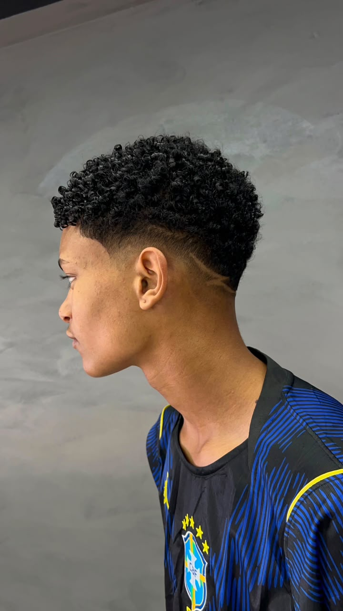
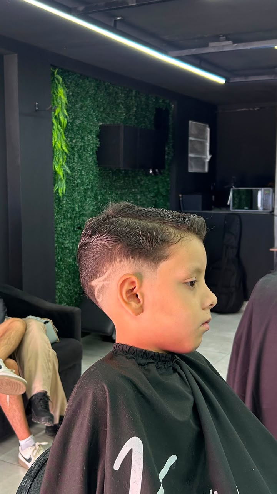
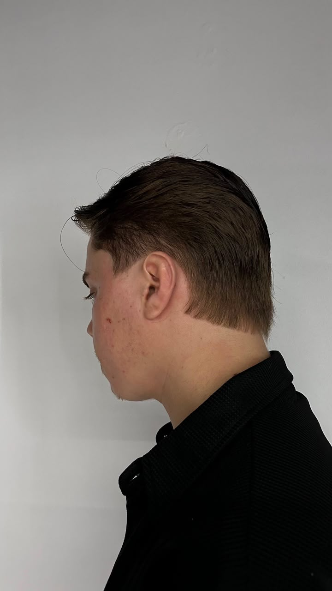
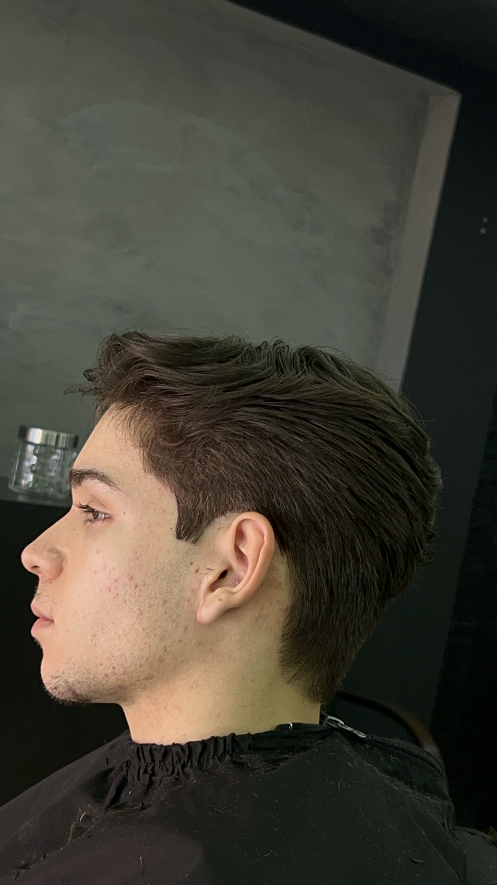

Conheça mais sobre a trajetória, especialidades e trabalhos de Victor Soarez.
Aqui vamos contar a trajetória profissional de Victor Soarez, como começou na barbearia, sua evolução profissional e as experiências que contribuíram para construir seu estilo de trabalho.
Biografia Victor Soarez:
Meu nome é Victor Soares, mas quase todo mundo me chama de Soarez. Sempre fui uma pessoa curiosa. Gosto de entender pessoas, observar comportamentos e encontrar significado nas pequenas coisas da vida. Talvez seja por isso que nunca consegui enxergar meu trabalho apenas como um meio de ganhar dinheiro. Para mim, tudo o que faço precisa ter um propósito. Acredito que as melhores conexões começam com uma boa conversa. Ao longo dos anos, percebi que, muitas vezes, as pessoas não procuram apenas um serviço. Elas procuram um ambiente onde possam se sentir bem, ser ouvidas e sair melhores do que chegaram. Sou alguém que acredita muito na evolução. Gosto de aprender, de estudar e de me desafiar constantemente. É essa busca que me faz crescer todos os dias, tanto como profissional quanto como ser humano. Minha fé, minha história e tudo o que vivi moldaram a pessoa que sou hoje. Passei por momentos que me ensinaram o valor da empatia, da disciplina e da perseverança. Carrego esses aprendizados em cada decisão e em cada pessoa que tenho a oportunidade de conhecer. No fim das contas, acredito que nossa marca não é o que dizemos sobre nós mesmos, mas a forma como fazemos as pessoas se sentirem. E é exatamente isso que procuro deixar em cada encontro: uma boa experiência, uma conversa sincera e a sensação de que valeu a pena estar ali.
Cursos, especializações e experiências profissionais de Victor Soarez.
Feito em 2024
Feito em 2024
Feito em 2024
Feito em 2024
Feito em 2024
Universidade Barber Day - 2025
Uma seleção de cortes e trabalhos realizados pelo próprio Victor.




Vídeos de procedimentos, cortes e trabalhos realizados por Victor Soarez.
Entre em contato com Victor ou agende seu horário na Kauã The Barber.